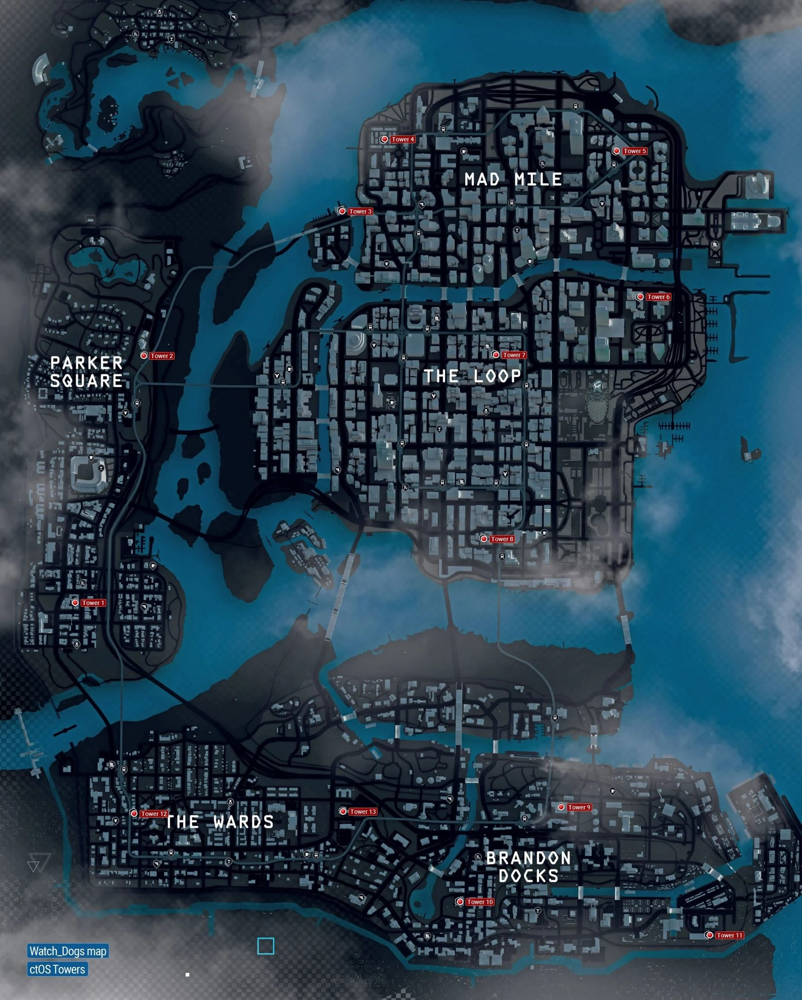

CHICAGO ctOS
El sistema CTOS fue creado por el gobierno en 2011, a raíz de un gran
apagón en toda la región de América del Noreste en 2003, dejando más de 55
millones de personas en la oscuridad. El apagón fue causado por un
empleado descontento que ha subido un virus que paralizó la red de energía
eléctrica en la costa este De Chicago. Una pregunta que se hace con
frecuencia sobre la CTOS es quien controla el sistema que controla
Chicago. Una cosa que se había señalado sobre el CTOS es que las grandes
empresas pueden utilizar los datos almacenados / recopilados por el CTOS
para maximizar sus ganancias. Alternativamente se había dado cuenta de que
el control del sistema se podría caer en las manos equivocadas, es decir,
los piratas informáticos.
QUÉ ES EL ctOS?
El sistema operativo central (abreviado como CtOS) es un software de
ordenador que controla la red de una ciudad con información completa,
incluyendo todos los datos personales. Una ciudad ctOS no solo
almacena y registra cada momento de la vida digital de los ciudadanos,
sino también las piezas junto a la forma en que piensan y lo que
creen. Es controlado por empresas privadas que utilizan el software
para beneficio propio, y puede utilizar la información recopilada
sobre las personas para vender productos e influir en las visiones del
mundo.
TORRES DE ctOS
Las torres ctOS de Watch Dogs te dan acceso a toda la información sobre
un distrito del juego. Activando los centros de control ctOS vemos todo
el mapa, pero solo con las torres podremos obtener información sobre
todos los puntos de interés interesante. Hay quince torres en total en
el juego, dos de ellas integradas en misiones, y otras trece que
deberemos desbloquear por nuestra cuenta, encontrándolas y hackeándolas.
Antes de desbloquear las torres tenemos que desbloquear su centro de
control ctOS asociado.
En rojo, las 13 torres de ctOS ubicadas por toda Chicago.
